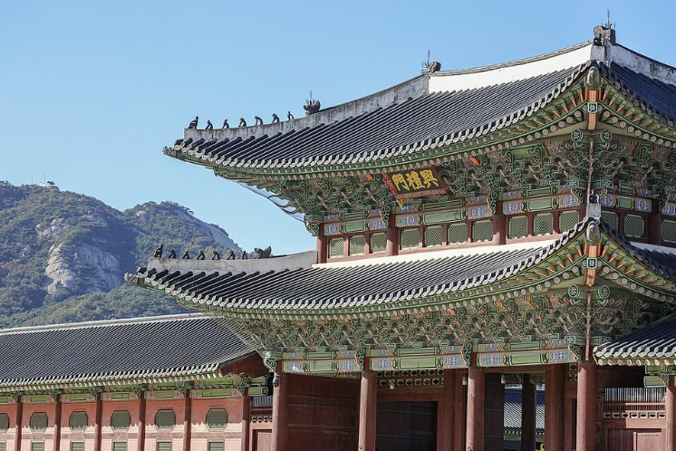
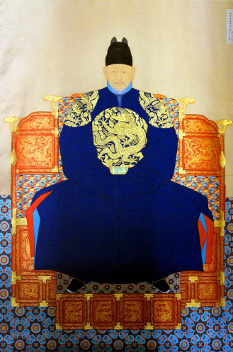
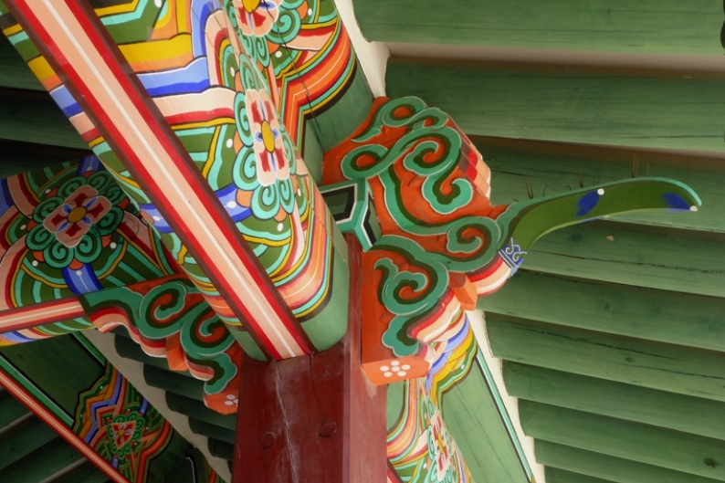
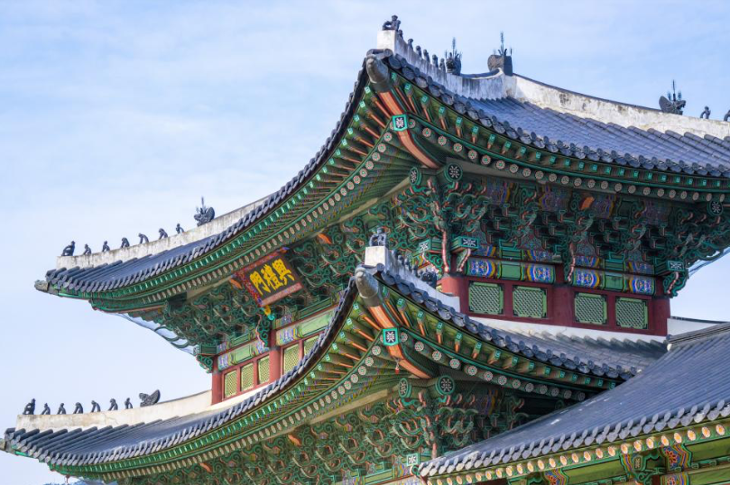

The Legacy of the
Joseon Dynasty


The Joseon Dynasty
The Joseon Dynasty ruled Korea from 1392 to 1910. During this period, Confucian values shaped government, architecture, and everyday life. Many of Korea's most famous cultural treasures were built during this era.
Palace Architecture
Korean palaces were carefully designed to blend with nature. Their colorful wooden buildings, tiled roofs, stone courtyards, and decorative dancheong paintings reflect both beauty and function.


Preserving History
Today, Korea's royal palaces are protected as important cultural heritage sites. Millions of visitors explore these historic landmarks every year to learn about Korea's rich history and traditions.
Visit, Learn, and Experience Korea's Heritage
Walk through history and feel the beauty of the Joseon Dynasty.